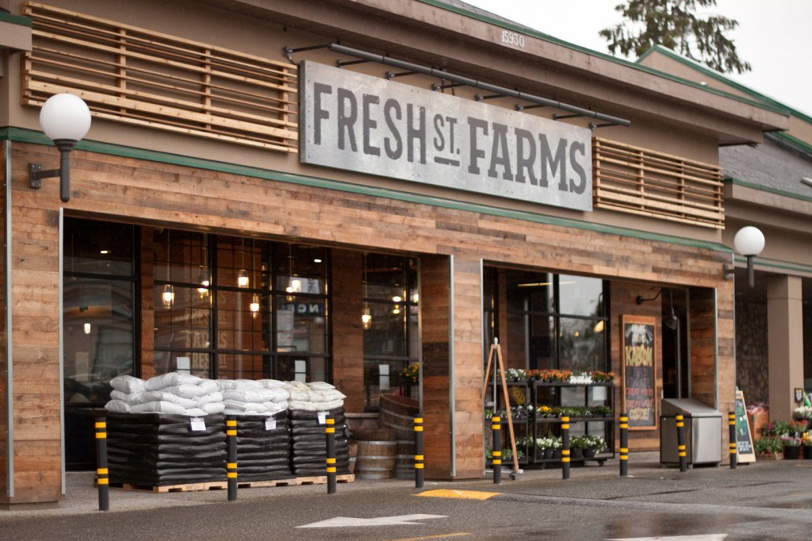

Our Branches
Main Street Branch
Located in the heart of the city, our Main Street branch offers a wide selection of fresh produce, dairy products, and cosmetics.
Suburban Branch

Conveniently situated in the suburban area, our Suburban branch provides easy access to farm-fresh groceries and essential household items.
Our Services
| Service | Description | Availability |
|---|---|---|
| Delivery | Get your groceries delivered straight to your doorstep. | Available |
| Catering | Let us cater your events with our fresh and delicious food options. | Available |
| Party Planning | We can help you plan and organize your special events. | Available |
| Contact us for more information about our services. | ||